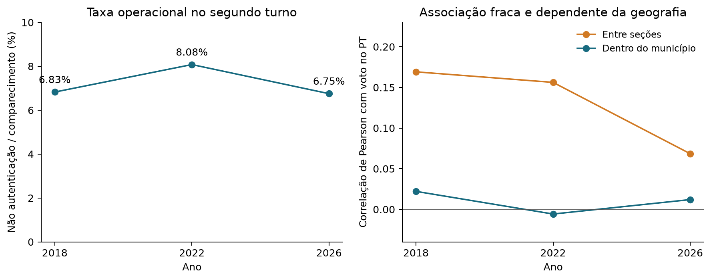
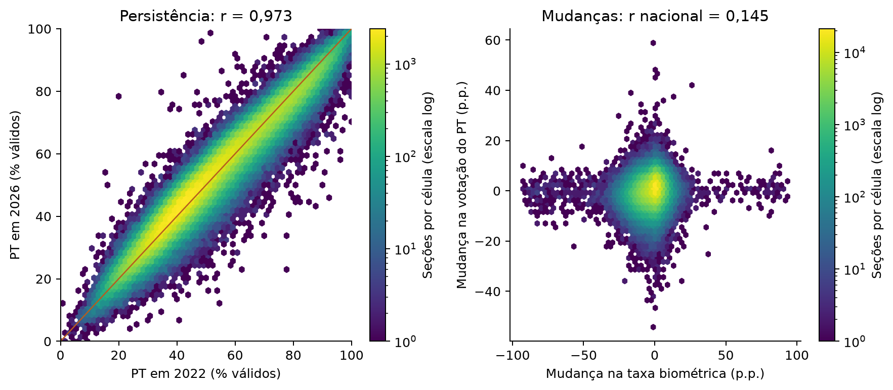
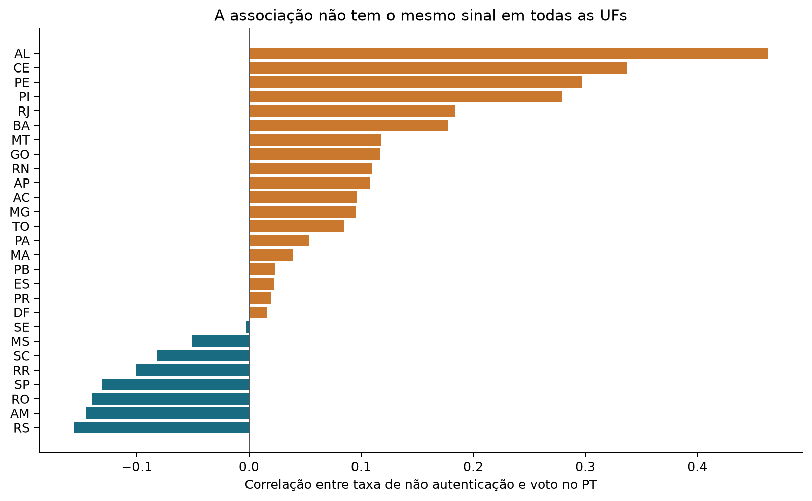
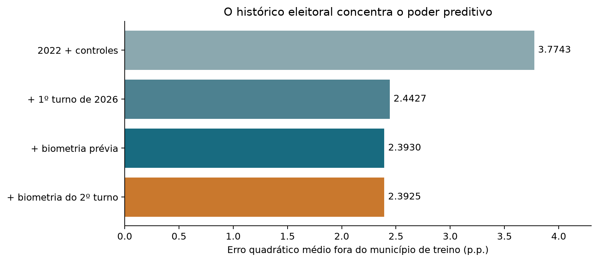
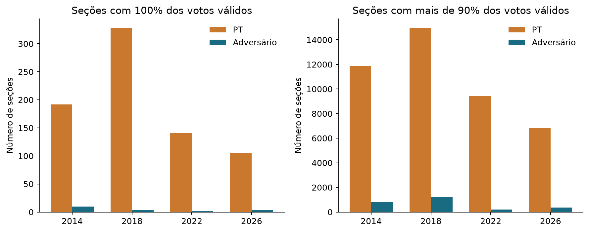
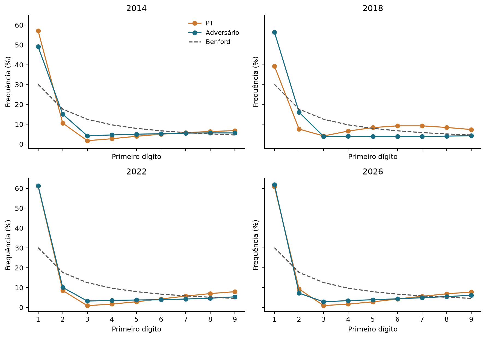

Suplemento científico à análise da eleição de 2026: correlações, persistência, extremos e limites de inferência
Extensão exploratória baseada em registros públicos. Revisão interna; não submetida a revisão externa por pares.
A relação com eleições anteriores é forte para a geografia da votação e fraca para uma relação específica entre não autenticação biométrica e ganho de votos do PT em 2026. Nas 460.290 seções ligadas de 2022 a 2026, a correlação da participação do PT nos votos válidos é 0,973. A correlação nacional entre a taxa de não autenticação e voto no PT em 2026 é 0,068; dentro do mesmo município, 0,012. A correlação entre as mudanças de ambas as variáveis cai de 0,145 para -0,0027 ao retirar as médias municipais.
Esses resultados enfraquecem a leitura de uma relação forte, nova e uniforme entre não autenticação e o resultado de 2026. Não demonstram que todas as liberações de votação foram regulares, nem identificam a preferência de quem foi liberado sem autenticação biométrica. Associações locais positivas também foram preservadas.
O estudo anterior tratou da prorrogação judicial, horários, participação, diferenças entre turnos e anos e limites para margens eleitorais. Faltava esta auditoria específica das correlações biométricas, unanimidades e dígitos. Este suplemento amplia a comparação histórica com uma auditoria específica dos indicadores biométricos.
A extensão é exploratória. O plano foi registrado internamente antes dos primeiros cálculos desta extensão, mas com conhecimento dos resultados do estudo principal e das alegações públicas. Os controles de perfil e as revisões de definições foram adicionados após observar resultados iniciais, com alterações datadas. Não houve cegamento nem pré-registro público.
O BWeb informa pessoas com biometria cadastrada que não foram habilitadas por meio dela. Não é uma lista de todos os eleitores sem biometria, de todas as tentativas falhas do sensor ou de votos ilegais. A análise conta o campo uma vez por seção e turno, usando a linha canônica presidencial; a soma por candidato multiplicaria indevidamente essa contagem. Para 2024 usa-se prefeito apenas como comparação operacional. [S6]
A Resolução 23.751/2026 prevê conferência documental, tentativas de reconhecimento e um procedimento alternativo quando o reconhecimento falha, com ano de nascimento, registro no caderno e habilitação pela digital do mesário. A existência desse procedimento não prova que foi cumprido em cada caso; o total agregado tampouco prova seu descumprimento. [S1]
A taxa principal é a quantidade não autenticada dividida pelo comparecimento. O denominador necessário para medir a probabilidade de falha entre votantes com biometria cadastrada não está observado nessa combinação de produtos. Os perfis adicionais medem cadastro entre elegíveis, não cadastro entre os que de fato compareceram. Mudanças na cobertura biométrica e importações BIOEX limitam a comparação bruta entre anos. [S2, S7]
Também foram testadas as contagens brutas: em 2026, não autenticados versus votos no PT têm correlação 0,158, comparada a 0,218 em 2018 e 0,127 em 2022. Ao retirar apenas a relação linear de ambas as contagens com o comparecimento da seção, os valores são 0,054, 0,182 e 0,111, respectivamente. Isso evidencia a importância do tamanho da seção; não permite tratar qualquer dessas definições como prova de mecanismo. Todas as combinações de contagens e taxas estão no apêndice e nos derivados.
| Ano | Seções com taxa | Não autenticados | Taxa / comparec. | Pearson | Spearman | Pearson no município |
|---|---|---|---|---|---|---|
| 2018 | 453.703 | 7.898.943 | 6,825% | 0,169 | 0,152 | 0,022 |
| 2022 | 471.010 | 10.011.347 | 8,077% | 0,156 | 0,092 | -0,006 |
| 2026 | 497.897 | 8.632.488 | 6,752% | 0,068 | 0,045 | 0,012 |
Unidade: seção. Peso igual por seção nas correlações; taxa nacional é a razão entre somas. Não são correlações de contagens brutas. Em 2014 o BWeb analisado não contém o campo biométrico. A correlação interna subtrai as médias municipais das duas variáveis.

A persistência cresce de 0,860 entre 2014 e 2018 para 0,950 entre 2018 e 2022 e 0,973 entre 2022 e 2026, nas seções que puderam ser ligadas. Isso descreve estabilidade de padrões territoriais, não identidade de eleitoras e eleitores ao longo dos anos. Reorganização de seções, migração e mudança de candidatos afetam a interpretação.
A ligação de 2022 a 2026 cobre 93,46% do comparecimento doméstico posterior. Restringir a mesmo local e agregação, e depois a variação de no máximo 5% nos aptos, reduz a cobertura; a correlação do voto permanece em torno de 0,973. As perdas estão abertas nas tabelas. A comparação por município também é elevada: 0,989, evitando depender exclusivamente da numeração de seção.
Os segundos turnos municipais de 2024 têm seleção de municípios e candidatos locais. Foram usados para comparação da operação e persistência da taxa biométrica, sem substituir uma eleição presidencial por uma municipal. O esquema BWeb de 2014 não contém o indicador biométrico, portanto ele entra na história do voto e dos extremos, não numa série biométrica artificial de zeros.
| Comparação | Seções ligadas | Cobertura do comparecimento posterior | Pearson | Spearman |
|---|---|---|---|---|
| 2014 / 2º → 2018 / 2º | 349.826 | 77,16% | 0,8599 | 0,8500 |
| 2018 / 2º → 2022 / 2º | 437.178 | 93,63% | 0,9498 | 0,9394 |
| 2022 / 2º → 2026 / 2º | 460.290 | 93,46% | 0,9726 | 0,9699 |
| 2026 / 1º → 2026 / 2º | 497.897 | 100,00% | 0,9866 | 0,9871 |
Ligação por UF, município, zona e seção; não é acompanhamento dos mesmos indivíduos. Dilma, Haddad e Lula são candidatos diferentes, e as coalizões mudam. Sensibilidades de local/agregação e variação do eleitorado constam das tabelas completas.

A agregação muda a resposta. Em 2026, a correlação entre as 27 médias estaduais é 0,377, mas entre seções é 0,068 e entre médias municipais é -0,020. Com peso por comparecimento, os valores também mudam. Não se deve escolher somente o nível que produz a associação desejada.
AL, CE e PE têm associações positivas entre seções; RS, AM e SP têm associações negativas. O anexo inclui todas as UFs, relações internas aos municípios e modelos com perfil. Uma média nacional pequena não significa que todas as associações regionais sejam pequenas. Tampouco uma associação regional forte separa influência do cadastro, composição social, localização e funcionamento da seção.
As relações regionais não desaparecem todas com os controles: no modelo estrito, +10 pontos percentuais na taxa se associam a +0,615 ponto na votação do PT em AL, +0,676 em CE e +0,555 em PE, enquanto no RS a associação é -1,162 ponto. A tabela integral do apêndice inclui as 27 UFs, inclusive estimativas imprecisas. São análises exploratórias de heterogeneidade, não testes confirmatórios de irregularidade.
No modelo de 2026 com perfis, mesmo local e diferença de até 1% entre os aptos dos dois produtos, +10 pontos percentuais na taxa biométrica se associam a 0,021 ponto percentual na votação do PT. O intervalo condicionado ao modelo e agrupado por município é [-0,293; 0,335]. O sinal e a precisão devem ser lidos juntamente com as outras especificações, não como um efeito identificado.
Os ajustes incluem características agregadas de idade, escolaridade, cadastro biométrico, tamanho da seção, comparecimento e votos inválidos. Parte desses controles pode ser contemporânea ou afetada pela própria operação. Por isso são análises descritivas de sensibilidade, sem transformar a regressão em prova causal. Intervalos agrupados por UF e pesos por comparecimento estão publicados. [S4]
| UF | Seções | Correlação na UF | Dentro dos municípios |
|---|---|---|---|
| AL | 7.101 | 0,463 | 0,066 |
| CE | 23.765 | 0,338 | 0,148 |
| PE | 21.418 | 0,297 | 0,089 |
| SP | 103.656 | -0,131 | -0,128 |
| AM | 8.157 | -0,146 | 0,016 |
| RS | 27.547 | -0,156 | -0,099 |
Seleção explícita de exemplos positivos e negativos; a tabela completa contém as 27 UFs e três eleições. Não se atribui causalidade nem se seleciona um único resultado significativo.

Os 84 arquivos estaduais de perfil de 2018, 2022 e 2026 foram lidos em blocos, conferidos contra o inventário auditado e agregados sem guardar os grandes ZIPs no Mac. Os membros CSV foram lidos até o fim, verificando o CRC do ZIP. Datas de geração, chaves ambíguas e divergências de aptos foram registradas; a distinção entre códigos desconhecidos e negativos consta do apêndice.
A especificação estrita exige o mesmo local de votação e diferença relativa de no máximo 1% nos aptos. Isso melhora a compatibilidade entre cadastro e urna, mas seleciona uma população mais estável; não garante identidade individual nem elimina todos os confundidores. A especificação de vínculo por código sem essa restrição permanece disponível.
No segundo turno de 2026, essa ligação estrita retém 430.528 seções e 86,738% do comparecimento doméstico; o modelo efetivamente usa 430.528 seções após exigir os campos necessários. As perdas são parte da interpretação, não evidência de ausência de dados brutos.
Os modelos estimam associações entre seções do mesmo município. Os intervalos usam dependência interna ao município; uma versão agrupa por UF para permitir dependência mais ampla. Nenhum desses intervalos mede a incerteza sobre fraude ou o erro de contagem de um censo. A interpretação permanece condicionada ao modelo e à dependência suposta.
| Ano | Seções vinculadas | p.p. no voto / +10 p.p. na taxa | Intervalo por município | Intervalo por UF |
|---|---|---|---|---|
| 2018 | 423.529 | 0,377 | [0,013; 0,740] | [-0,316; 1,070] |
| 2022 | 407.160 | -0,333 | [-0,459; -0,208] | [-0,529; -0,138] |
| 2026 | 430.528 | 0,021 | [-0,293; 0,335] | [-0,417; 0,459] |
Controle por cadastro biométrico, proporção de pessoas com 60 anos ou mais, baixa escolaridade, tamanho, comparecimento e votos brancos/nulos. Mesmo local e diferença de até 1% no eleitorado entre produtos. Intervalos de 95% condicionais ao modelo, não intervalos amostrais do censo nem efeitos causais. Agrupamento por UF é sensibilidade com 27 grupos.
A mudança na taxa biométrica de 2022 a 2026 tem correlação positiva nacional com a mudança na participação do PT, mas a correlação interna ao município é -0,0027. A regressão de mudanças com voto anterior, mudança no comparecimento e tamanho também é próxima de zero. Não se trata de diferenças-em-diferenças causal: não há atribuição de tratamento nem grupo contrafactual identificado.
A predição é avaliada em municípios inteiros fora do treino. História eleitoral, UF, tamanho e comparecimento produzem erro de 3,7743 pontos percentuais; acrescentar o primeiro turno de 2026 reduz para 2,4427. Acrescentar as taxas biométricas anteriores reduz para 2,3930 e acrescentar a taxa do segundo turno para 2,3925. Há informação associativa adicional, mas o ganho específico do indicador contemporâneo é muito pequeno nesta especificação.
A relação entre fechamento e votação também foi comparada historicamente. A correlação nacional com o atraso transformado do fechamento foi 0,016 em 2018, 0,050 em 2022 e 0,113 em 2026. Dentro do município, foi 0,031, 0,025 e 0,008, respectivamente. Logo, o aumento nacional de 2026 não se traduz na mesma relação quando se compara a operação de seções dentro dos municípios; não foi tratado como efeito da decisão judicial.
O experimento é retrospectivo: inclui covariáveis contemporâneas e não promete antecipar o resultado antes da votação. Modelos não lineares poderiam ter desempenho diferente; não foi feita busca extensa de hiperparâmetros nem usado o melhor resultado de muitas divisões. A separação por município impede que seções do mesmo município apareçam simultaneamente no treino e na validação.
| Modelo acumulativo | RMSE (p.p.) | Erro absoluto (p.p.) | R² fora do treino | Predições fora de 0-1 |
|---|---|---|---|---|
| 2022 + controles | 3,7743 | 2,9234 | 0,95220 | 0 |
| + 1º turno de 2026 | 2,4427 | 1,9293 | 0,97998 | 250 |
| + biometria anterior | 2,3930 | 1,8856 | 0,98079 | 274 |
| + biometria do 2º turno | 2,3925 | 1,8851 | 0,98079 | 277 |
460.290 seções de 5.551 municípios, cinco partições fixadas por município. A especificação inicial inclui voto de 2022, UF, tamanho e comparecimento de 2026; é previsão retrospectiva. Predições lineares fora de 0-1 são contadas, não truncadas. Avaliação com peso por comparecimento também está disponível. DF fica sem exemplo da própria UF no treino; a sensibilidade que o exclui da avaliação é apresentada no apêndice.

Os 106 casos unânimes do PT e quatro do adversário em 2026 são reproduzidos. O número de seções domésticas com mais de 90% para o PT diminui de 14.957 em 2018 e 9.424 em 2022 para 6.802 em 2026. Nas seções ligadas entre 2022 e 2026, 5.107 das 5.935 que ultrapassam 90% em 2026 já ultrapassavam esse nível em 2022. Isso não torna cada seção regular, mas contradiz a descrição de um padrão inteiramente novo.
Um modelo binomial ilustrativo que usa a preferência média do restante do município prevê cerca de 0,325 seção unânime para o PT em 2026, diante de 106 observadas. Esse modelo falha também em anos anteriores. O resultado foi preservado: não afirmamos que a média municipal explica integralmente os extremos. Ele pressupõe eleitores independentes e homogêneos no município, hipóteses inadequadas quando há concentração de comunidades e preferências por local. Rejeitar esse modelo não identifica a causa do excesso.
Os primeiros dígitos das contagens de ambos os candidatos desviam de Benford em vários anos. O desvio absoluto médio do PT é 0,0793 em 2026, contra 0,0807 em 2022; para o adversário, 0,0749 contra 0,0712. Não há um resultado binário de fraude nessa comparação. Contagens limitadas pelo tamanho das seções e preferências territorialmente concentradas não recebem automaticamente a distribuição de Benford.
Cinco simulações por ano, sem introduzir operação de adulteração e preservando os tamanhos das seções, produziram MAD de aproximadamente 0,0845 para o PT em 2026, maior que o observado. Isso demonstra que um desvio substancial pode nascer da estrutura de contagens. Não transforma o modelo em padrão-ouro: ele continua subestimando as unanimidades e é condicionado aos agregados observados.
A literatura discute diferentes testes de dígitos e suas condições. A crítica não é que toda técnica forense seja inútil: é que este teste de primeiro dígito precisa de um modelo nulo válido e evidência operacional adicional. Mebane, que desenvolve métodos de análise forense eleitoral, também descreve a inadequação de inferir fraude desses gráficos de primeiro dígito. [S3, S5]
| Ano | 100% PT | 100% adversário | >90% PT | >90% adversário | Mediana de válidos nas unânimes PT |
|---|---|---|---|---|---|
| 2014 | 192 | 10 | 11.869 | 810 | 70,0 |
| 2018 | 328 | 3 | 14.957 | 1.192 | 93,0 |
| 2022 | 141 | 2 | 9.424 | 199 | 92,0 |
| 2026 | 106 | 4 | 6.802 | 368 | 124,5 |
Somente seções com votos válidos positivos. O patamar estrito >90% é diferente de >=90%. O candidato adversário é identificado pelo total nacional de votos, sem supor identidade política constante entre anos.


A auditoria tratou o relatório fornecido como alegações a conferir, não como prova nem como algo a descartar por sua autoria. Vários números se reproduzem, mas exigem definições diferentes da leitura literal. A vantagem de 52,39% aparece quando "até 17h" inclui todo o minuto 17:00 e usa o horário local sem normalizar os fusos. O intervalo de 17:01 a 17:15 também inclui o último minuto inteiro. [S8, S9]
Mesmo com essa reprodução, o total da coorte que fecha tarde inclui seus votos depositados durante o dia inteiro. Ele não informa quantos foram depositados depois do prazo e muito menos quantos foram causados pela prorrogação. Nos dados domésticos normalizados, a mesma coorte de fechamento até 17:00:59 dá 50,9917% ao adversário, em vez de 52,3949%. As definições e a exclusão do exterior precisam ser declaradas.
A contagem de 6.899 x 384 se reproduz com pelo menos 90%, incluindo o exterior. Com mais de 90% estritos, são 6.816 x 378. Os resíduos da faixa de 19h e do percentual de 17:16 a 18:59 permanecem documentados; não foram resolvidos ajustando arbitrariamente cortes até coincidir.
| Alegação | Conferência | Definição / ressalva |
|---|---|---|
| 499.205 seções / 128.236.074 | Reproduzido | O segundo número é comparecimento; votos válidos são 124.082.273. |
| 8.632.488 sem autenticação biométrica | Reproduzido | 6,7317% do comparecimento total; 6,7518% do doméstico. Não identifica votos ilegais. |
| 52,39% para Flávio até 17h | Reproduzido com convenção | Até 17:00:59, horário local: 52,3949%; corte literal 17:00:00: 59,7212%. |
| Vantagem de >6,1 milhões depois | Reproduzido com convenção | 6.177.738 na coorte que fecha a partir de 17:01, contando todos os seus votos. |
| 339.593 seções entre 17:01 e 17:15 | Reproduzido | Inclui até 17:15:59; comparecimento 88.071.750. |
| 2.472 seções entre 17:16 e 18:59 | Reproduzido | Comparecimento 674.799; participação PT 57,1648%, ante 57,21% publicado. |
| 6.333 seções depois de 19h | Não reproduzido exatamente | 6.326 no corte estrito, 6.342 incluindo 19:00:00. Não foi inferida a causa da diferença. |
| 106 x 4 unânimes | Reproduzido | Total nacional; não é prova autônoma de irregularidade. |
| 6.899 x 384 acima de 90% | Reproduzido como >=90% | Com corte estrito e exterior: 6.816 x 378; doméstico: 6.802 x 368. |
Sete páginas do relatório foram preservadas com hash. O autor não disponibilizou código executável ou os gráficos estatísticos mencionados nessas páginas. Diferentes versões ou regras podem explicar resíduos, mas essa hipótese não foi tratada como fato.
A hipótese de votos adicionais causados pela prorrogação e a hipótese de identificação indevida durante o dia inteiro são diferentes. O estudo principal sustentou a estabilidade das sete margens analisadas sob o mecanismo restrito de participantes adicionais após os cortes e suas sensibilidades. No cenário presidencial conservador com antecipação de 15 minutos e incerteza de contexto, a menor margem ainda era 2.262.970 votos. Isso não é uma certificação de todo mecanismo imaginável de irregularidade.
Para a hipótese diferente de que uma parte desconhecida dos 8.632.488 comparecimentos não autenticados fosse indevida e adicional, sem alterar as escolhas dos demais, os agregados permitem matematicamente margens entre -4.189.464 e 12.983.119. O intervalo cruza zero porque não se sabe quais votos pertencem a esse grupo nem se existe qualquer irregularidade nele. Não é estimativa de fraude, probabilidade ou intervalo de confiança.
A possibilidade algébrica exige uma premissa não demonstrada. Para reverter a margem observada apenas removendo participantes adicionais favoráveis ao vencedor, seriam necessários pelo menos 4.430.192 votos líquidos, equivalentes a 51,32% de todo o total não autenticado se todos esses casos favorecessem o vencedor. A análise não observou esses votos indevidos, não atribuiu candidato a nenhum eleitor e não estimou esse percentual como algo ocorrido.
Portanto: os dados temporais e os cenários restritos do estudo principal não sustentam que a prorrogação tenha virado a eleição. As correlações e comparações históricas desta extensão também não fornecem evidência de uma vantagem nova e forte decorrente da não autenticação biométrica. Mas nenhum desses resultados substitui uma auditoria dos procedimentos de identificação, atas e cadernos, se a pergunta passar a ser fraude de identidade em casos concretos.
As principais limitações são a natureza ecológica das variáveis, o denominador biométrico condicional não observado, alterações de cadastro e códigos, versões dos produtos, dependência territorial, erro de mensuração de relógios e ausência de atribuição causal. Os dados históricos também não são um padrão-ouro externo de regularidade. Persistência pode ser compatível com vários mecanismos; não permite provar ausência universal de irregularidade.
A aquisição principal permanece auditada em 3.388 objetos e 521.157.604.697 bytes. Foram comparados 1.318 companheiros oficiais de hash; 638 objetos tiveram releitura integral na aquisição. A auditoria final não releu todos os grandes arquivos. Permanecem o SHA1 de 2014 indisponível, com seu ZIP preservado na coleta, e os dez documentos auxiliares originalmente não arquivados. Textos oficiais consultados pela ferramenta web não foram reclassificados como cópias binárias arquivadas. As novas tentativas HTTP de duas páginas oficiais também retornaram 403, enquanto três documentos metodológicos foram preservados.
Esta extensão entrega medidas de associação, heterogeneidade, persistência e limites explícitos. Não atribui votos individuais, não chama correlação de prova de fraude e não usa uma correlação pequena como prova de integridade total. As tabelas que enfraquecem a hipótese inicial e as associações regionais que não desaparecem estão preservadas junto com o código.
S1. TSE. Resolução 23.751/2026, identificação do eleitor e fluxo de votação.
S2. Justiça Eleitoral. Identificação biométrica, histórico e BIOEX.
S7. TSE. Perfil do eleitorado de 2026; perfis de 2018 e 2022 também processados.